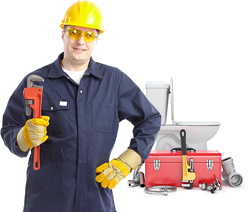

202-830-3841
|
Have Plumbing Problems? We Have the Solution!
We Have the Solution!
Fast Plumbing Services
|
 | ||||
|
Like many systems vital to our daily lives, when a plumbing system is running smoothly we may hardly notice it at all. All our needs for water supply and waste removal are met unobtrusively behind the scenes, and we can gladly turn our attentions to other things. When a problem arises, however, it's often a sudden and urgent matter. You need professional help that you can trust, and you need it NOW. That is why Call-A-Pro-Plumbing is the solution you can turn to when you have plumbing problems in your home or business. We are here for you 24 hours a day, 7 days a week — because trouble can strike at any hour without warning. We are standing by to take your call, and will immediately put you in touch with a qualified and caring plumbing professional nearest you. Although many of the service calls we receive are for plumbing emergencies, why wait until problems develop? Our network of plumbing experts can advise you on installation of fixtures, water supply and waste-management systems that will be the most functional and economical for your home or business. These can also include sustainable and ecologically-sound plumbing solutions such as solar water heaters, water conservation strategies and recycled greywater systems. Another important aspect of keeping your plumbing in top working order is maintenance. Proper maintenance of plumbing systems that are already installed can help prevent many a future plumbing crisis. Regular plumbing inspection can identify small problems that you may not even be aware of and repair them before they turn into big issues — so be sure to schedule a service checkup today! Your plumbing is in good hands with Call-A-Pro-Plumbing. Don't hesitate to contact us with any questions you may have at any time. Our network of local plumbing professionals are available to you with a full range of plumbing experience and expertise. Call us now at 888-606-2038. |
waste-management systems that will be the most functional and economical for your home or business. These can also include sustainable and ecologically-sound plumbing solutions such as solar water heaters, water conservation strategies and recycled greywater systems. Another important aspect of keeping your plumbing in top working order is maintenance. Proper maintenance of plumbing systems that are already installed can help prevent many a future plumbing crisis. Regular plumbing inspection can identify small problems that you may not even be aware of and repair them before they turn into big issues — so be sure to schedule a service checkup today! Your plumbing is in good hands with Call-A-Pro-Plumbing. Don't hesitate to contact us with any questions you may have at any time. Our network of local plumbing professionals are available to you with a full range of plumbing experience and expertise. Call us now at 888-981-2495. |
|
|